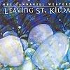

Celtic Lyrics Corner > Artists & Groups > Tannahill Weavers > Leaving St. Kilda > Hieland Harry
|  | Hieland Harry |
| Credits : |
a) Hieland Harry - Robert Burns
b) The Wee Highland Laddie (2nd Part) - Donald MacLeod c) Lieutenant Colonel D.J.S. Murray - J. Allan |
| Appears On : | Leaving St. Kilda |
| Language : | Scots-English |
Lyrics :
Chorus
:
Oh for him back again
Oh for him back again
I wid gie a' Knockhaspie's land
For Hieland Harry back again
My Harry was a gallant gay
Fu' stately rade he o'er the plain
But noo they've sent him far awa'
We'll never see him back again
(Chorus 2x)
When a' the lave gang tae their beds
I wander dowie up the glen
I sit me doon and greet my fill
And aye I wish him back again
(Chorus 2x)
Oh were some villains hingit high
And ilka body had their ane
Then I might see the joyfu' sight
O' Highland Harry back again
(Chorus 2x)
My Harry was a gallant gay
Fu' stately rade he o'er the plain
But noo they've sent him far awa'
We'll never see him back again
(Chorus 2x)